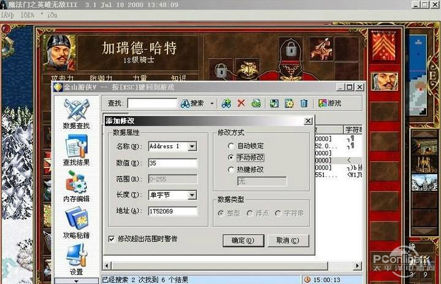

Hacking Address Spaces
进程 ($M, R$ 状态机) 在 “无情执行指令机器” 上执行
- 状态机是一个封闭世界
但如果允许一个进程对其他进程的地址空间有访问权 ？- 意味着可以任意改变另一个程序的行为
- 听起来就很 cool
- 意味着可以任意改变另一个程序的行为
一些入侵进程地址空间的例子
- 调试器 (gdb)
- gdb 可以任意观测和修改程序的状态
- Profiler (perf)
- 合理的需求，操作系统就必须支持 → Ask GPT!
入侵进程地址空间 (0): 金手指
如果我们能直接物理劫持内存，不就都解决了吗？
- 听起来很离谱，但 “卡带机” 时代的确可以做到！

Game Genie: 一个 Look-up Table (LUT)
- 当 CPU 读地址 $a$ 时读到 $x$，则替换为 $y$
入侵进程地址空间 (1): 金山游侠

包含非常贴心的 “游戏内呼叫” 功能
- 它就是游戏的 (阉割版) “调试器”
- 我们也可以在 Linux 中实现它 (man 5 proc)

入侵进程地址空间 (3): 变速齿轮
- 比如某神秘公司慢到难以忍受的跑图和战斗

本质：程序是状态机
- 除了 syscall，是不能感知时间的
- 只要 “劫持” 和时间相关的 syscall，就能改变程序对时间的认识
- 原则上程序仍然可以用间接信息 “感知” 的 (就想表调慢了一样)
定制游戏外挂
“劫持代码” 的本质是 debugger 行为
- 游戏也是程序，也是状态机
- 外挂就是 “为这个游戏专门设计的 gdb”
修改 API 调用的值
set_alarm(1000 / FPS); // 希望改成 100 / FPS
锁定生命值
- 最简单的生命值锁定是 spin modify
- 还是可能出现
hp < 0的判定 (尤其是一刀秒的时候)
hp -= damage; // 希望 “消除” 此次修改
if (hp < 0) game_over();
代码注入 (hooking)
用一段代码 “勾住” 程序的执行